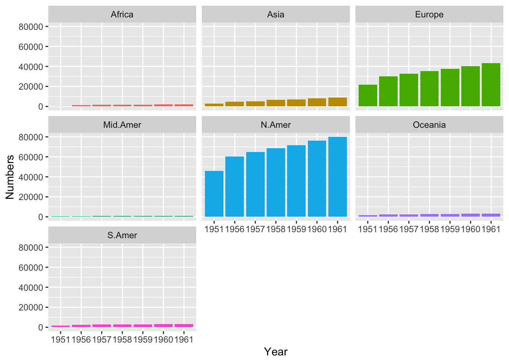
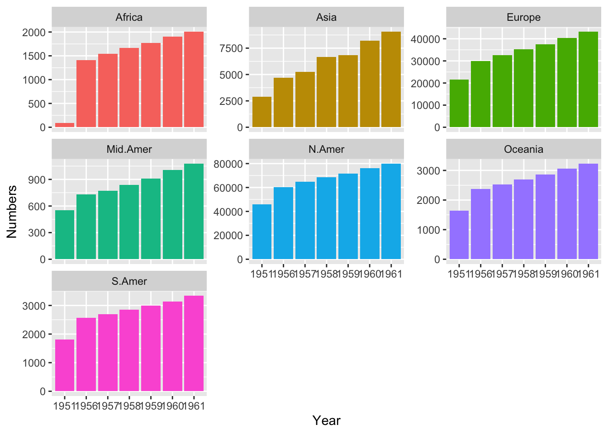
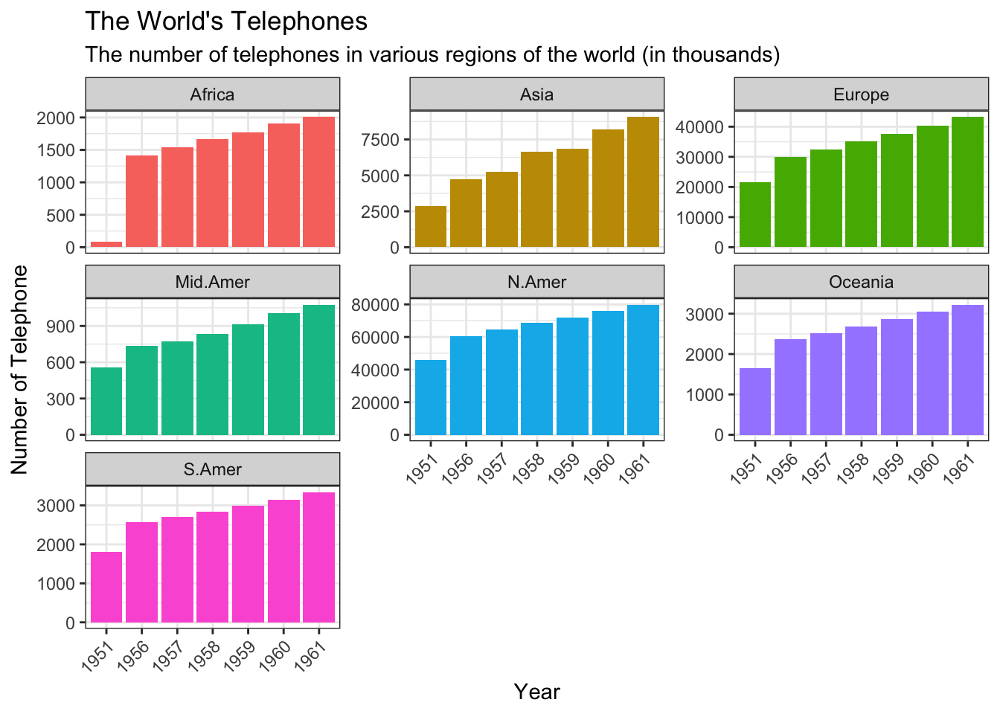

graphics.off()
rm(list = ls())
gc() used (Mb) gc trigger (Mb) limit (Mb) max used (Mb)
Ncells 578546 30.9 1318351 70.5 NA 669274 35.8
Vcells 1057758 8.1 8388608 64.0 16384 1851504 14.2Sean Ahn
October 1, 2023
In this blog post,I’ll make a simple column plot. A characteristic feature is that the values in the data have a large variance, which makes it difficult to compare them to each other. ggplot has a facet_wrap() function (or facet_grid()) for this purpose.
In fact, a tile plot would be more appropriate in this case, but to keep the example as simple as possible, I’ll plot without any data manipulation.
I usually use the following code for initialization. If you don’t want to remove plots and/or variables, you can skip it.
used (Mb) gc trigger (Mb) limit (Mb) max used (Mb)
Ncells 578546 30.9 1318351 70.5 NA 669274 35.8
Vcells 1057758 8.1 8388608 64.0 16384 1851504 14.2We want to use as few packages (some might call them “libraries”) as possible. If possible, I’m going to use only the tidyverse package. Tidyverse is one of the most famous packages in R programming, and it’s really powerful and useful.
── Attaching core tidyverse packages ──────────────────────── tidyverse 2.0.0 ──
✔ dplyr 1.1.2 ✔ readr 2.1.4
✔ forcats 1.0.0 ✔ stringr 1.5.0
✔ ggplot2 3.4.2 ✔ tibble 3.2.1
✔ lubridate 1.9.2 ✔ tidyr 1.3.0
✔ purrr 1.0.1
── Conflicts ────────────────────────────────────────── tidyverse_conflicts() ──
✖ dplyr::filter() masks stats::filter()
✖ dplyr::lag() masks stats::lag()
ℹ Use the conflicted package (<http://conflicted.r-lib.org/>) to force all conflicts to become errorsWhen I write posts in my blog, I use the built-in dataset because I don’t want the reader to suffer by having to find the data from somewhere else.
The dataset I’ll be using in this post is shown below ⬇️ ⬇️ ⬇️.
The World’s Telephones
Description The number of telephones in various regions of the world (in thousands)
Usage WorldPhones
Format A matrix with 7 rows and 8 columns. The columns of the matrix give the figures for a given region, and the rows the figures for a year.
The regions are: North America, Europe, Asia, South America, Oceania, Africa, Central America.
The years are: 1951, 1956, 1957, 1958, 1959, 1960, 1961.
Source AT&T (1961) The World’s Telephones.
References McNeil, D. R. (1977) Interactive Data Analysis. New York: Wiley.
N.Amer Europe Asia S.Amer Oceania Africa Mid.Amer
1951 45939 21574 2876 1815 1646 89 555
1956 60423 29990 4708 2568 2366 1411 733
1957 64721 32510 5230 2695 2526 1546 773
1958 68484 35218 6662 2845 2691 1663 836
1959 71799 37598 6856 3000 2868 1769 911
1960 76036 40341 8220 3145 3054 1905 1008WorldPhones dataset has several attributes as followings;
and WorldPhones is 7 rows and 7 columns. it super tiny.
oops, autoplot in ggplot does not support matrix object. there is lots of way to plot the matrix data.
but I want to use ggplot and tidyverse eco-system, so I’ll convert matrix to dataframe.
it’s quite easy.
N.Amer Europe Asia S.Amer Oceania Africa Mid.Amer
1951 45939 21574 2876 1815 1646 89 555
1956 60423 29990 4708 2568 2366 1411 733
1957 64721 32510 5230 2695 2526 1546 773
1958 68484 35218 6662 2845 2691 1663 836
1959 71799 37598 6856 3000 2868 1769 911
1960 76036 40341 8220 3145 3054 1905 1008or I can use as_tibble() function.
# A tibble: 6 × 8
Year N.Amer Europe Asia S.Amer Oceania Africa Mid.Amer
<chr> <dbl> <dbl> <dbl> <dbl> <dbl> <dbl> <dbl>
1 1951 45939 21574 2876 1815 1646 89 555
2 1956 60423 29990 4708 2568 2366 1411 733
3 1957 64721 32510 5230 2695 2526 1546 773
4 1958 68484 35218 6662 2845 2691 1663 836
5 1959 71799 37598 6856 3000 2868 1769 911
6 1960 76036 40341 8220 3145 3054 1905 1008both data frame looks very similar. but there is quite differences between them.
take a look dimension of data frame.
as you can see, data frame which generate with as.data.frame() is smaller than dplyr data frame.
WHY ❓
typically, 1st column of matrix role as name of rows. when I convert matrix to data frame with as.data.frame, name of rows can not include as part of data frame.
sometimes, we need this data set should include part of data frame.
For the purposes of this post, it is desirable that these rows are recorded as the first row of the data frame because their names refer to the year in which each piece of data was acquired.
Anyway, I’ll use data frame which generate with as_tibble() from here.
Year column is character type so I can change it to numeric type if I need.
Sometimes you need to assign date or date_time type on it depends on what will you do.
but in this blog post, I think it’s not necessary so I just keep it as a character type.
# df_dplyr <- df_dplyr |> mutate(Year = (as.integer(Year))) # if you want to it makes integer type.
df_dplyr# A tibble: 7 × 8
Year N.Amer Europe Asia S.Amer Oceania Africa Mid.Amer
<chr> <dbl> <dbl> <dbl> <dbl> <dbl> <dbl> <dbl>
1 1951 45939 21574 2876 1815 1646 89 555
2 1956 60423 29990 4708 2568 2366 1411 733
3 1957 64721 32510 5230 2695 2526 1546 773
4 1958 68484 35218 6662 2845 2691 1663 836
5 1959 71799 37598 6856 3000 2868 1769 911
6 1960 76036 40341 8220 3145 3054 1905 1008
7 1961 79831 43173 9053 3338 3224 2005 1076I’m going to plot the telephone supply in each continent by year, but the current data format makes it difficult to create the desired plot.
so I transform data format with pivot_longer() function.
# A tibble: 10 × 3
Year Region Numbers
<chr> <chr> <dbl>
1 1951 N.Amer 45939
2 1951 Europe 21574
3 1951 Asia 2876
4 1951 S.Amer 1815
5 1951 Oceania 1646
6 1951 Africa 89
7 1951 Mid.Amer 555
8 1956 N.Amer 60423
9 1956 Europe 29990
10 1956 Asia 4708much better! 👍
try to make a simple line plot.
or…
There are some problems to read a line plot. first of all some of data values are too small (or too big), it’s difficult to show change of data properly.
Typically, we manipulate data value before make plots depends on what you want to give message to readers. “standardization” or “normalization” is one of good example if you want to show change of values by year. “logarithm” also good method to show very large number and relatively small number simultaneously on the same plot.
You can search them and what they do. If you have statistic background, you can make better plot.
I’m going to create the plot in a simple way: I want to show the reader that the number of phones installed per region increases over time.
Of course, there are a number of statistical data manipulations that can be done, such as the ones we talked about earlier, but for the sake of simplicity, I’ll just use the data as it is.
So I used the facet_warp() function to split the plot by region.
df |>
ggplot(aes(Year, Numbers, fill = Region)) +
geom_col(show.legend = FALSE) +
facet_wrap(vars(Region))
As you might expect, regions with smaller numbers are harder to detect changes in.
To help with this, ggplot has an option to scale each faceted plot differently.
When I use facet_warp(), scales argument help to do it.
df |>
ggplot(aes(Year, Numbers, fill = Region)) +
geom_col(position = "dodge", show.legend = FALSE) +
facet_wrap(vars(Region), scales = "free_y" )
It looks better 😁.
I then add extra stuff to decorate this plot.
df |>
ggplot(aes(Year, Numbers, fill = Region)) +
geom_col(position = "dodge", show.legend = FALSE) +
facet_wrap(vars(Region), scales = "free_y") +
labs(title = "The World's Telephones",
subtitle = "The number of telephones in various regions of the world (in thousands)",
x = "Year", y = "Number of Telephone") +
theme_bw() +
theme(axis.text.x = element_text(angle = 45, hjust = 1))
END OF POST